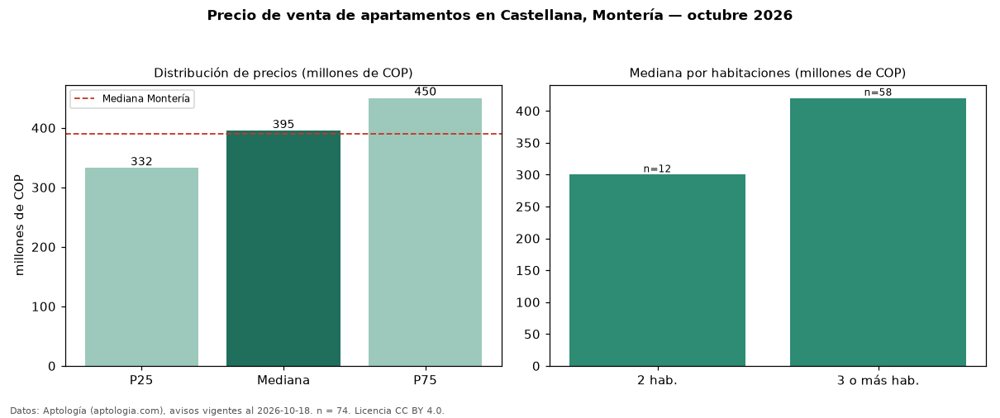

Precio de venta de apartamentos en Castellana, Montería — octubre 2026
En La Castellana, Montería, la mediana de precio de venta de apartamentos es COP 395 millones, según 74 avisos vigentes. Prácticamente coincide con la mediana de Montería para apartamentos (COP 390 millones). Por metro cuadrado, la mediana es COP 3,68 millones/m² (n = 70 avisos con área), 1 % por debajo de Montería (COP 3,72 millones/m²). El área mediana anunciada es 114 m². El segmento con más oferta es el de 3 o más habitaciones (58 avisos, mediana COP 420 millones); pasar de 2 habitaciones a 3 o más habitaciones cambia la mediana +40 %. La administración mediana declarada es COP 510.000 al mes (n = 15). El estrato más frecuente es 5 (49 % de los avisos con estrato). 73 % de los avisos con el dato declara parqueadero o cochera. Datos: Aptología (aptologia.com), CC BY 4.0 — https://www.aptologia.com/venta/monteria/castellana. Archivos: PDF, CSV con las cifras y gráfica PNG.

| Avisos únicos | 74 |
|---|---|
| Percentil 25 | COP 332.500.000 |
| Mediana | COP 395.000.000 |
| Percentil 75 | COP 450.000.000 |
| Mediana por m² | COP 3.675.213 |
Fuente: avisos vigentes de portales inmobiliarios recopilados por Aptología, deduplicados (mínimo 30 avisos únicos por celda). Precios pedidos, no cerrados. Fecha: 2026-10-18.